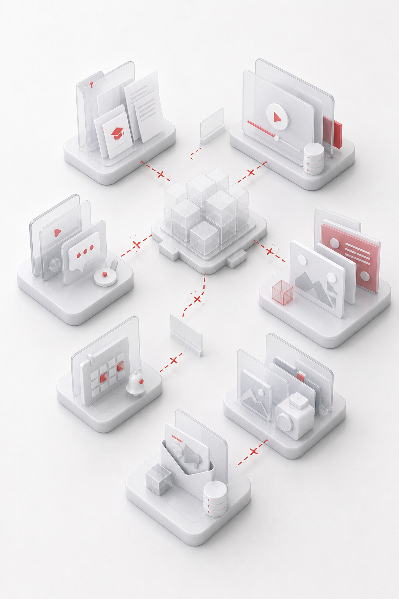
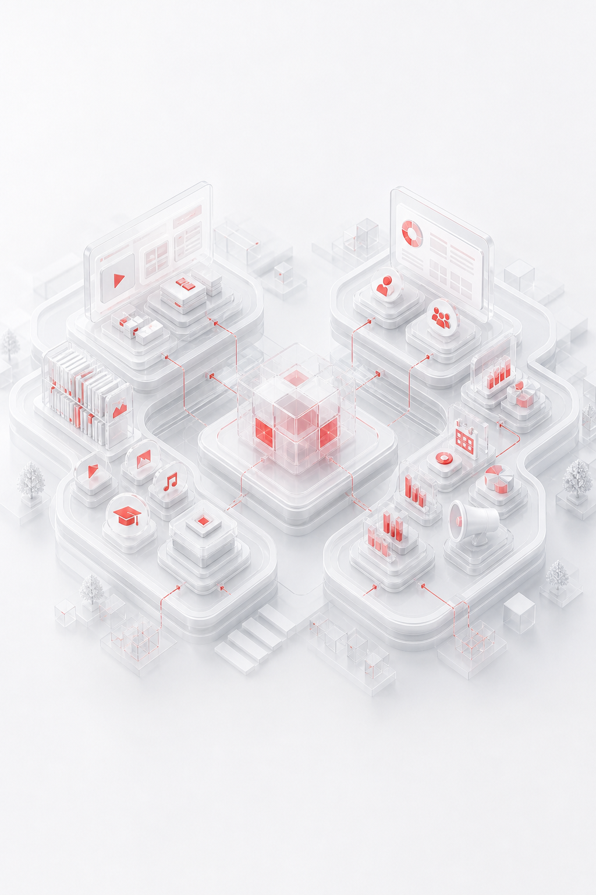
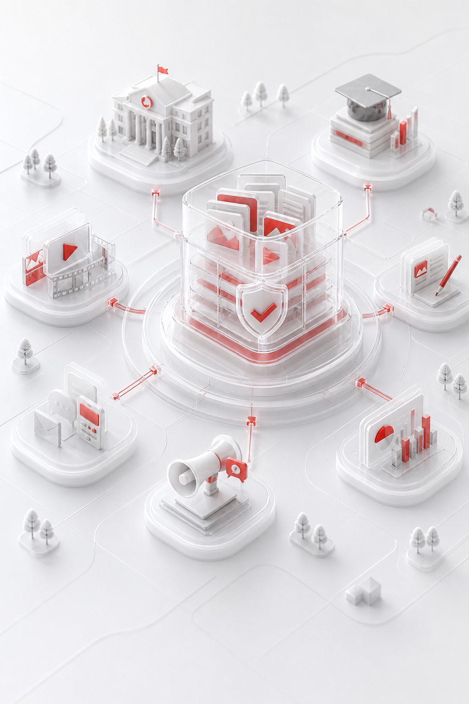
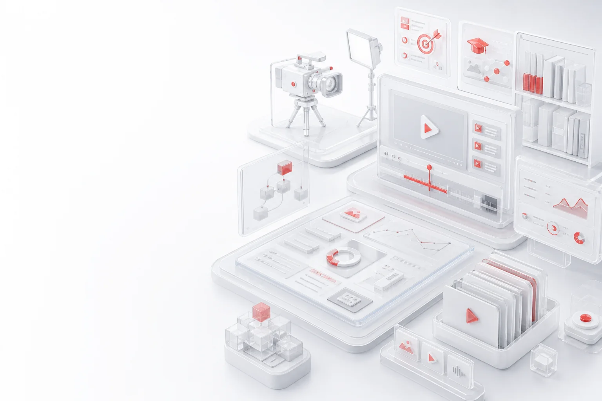
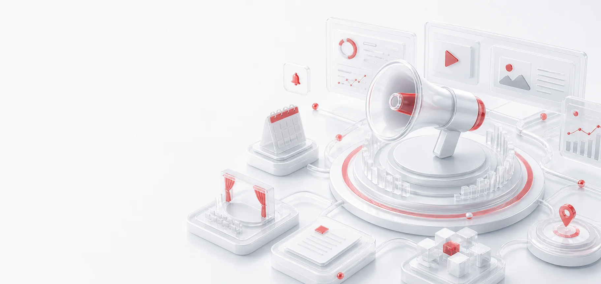

01
当前问题
资源标准分散，内容应用与品牌传播相互脱节
连接课程资源生产与教育品牌运营，形成可更新、可应用、可传播的长期内容资产。

专业生产提升资源质量，持续运营促进应用转化，让品牌内容形成清晰、一致、可持续的表达。

资源标准分散，内容应用与品牌传播相互脱节

课程资源与品牌运营双主线

形成可复用、可传播的长期内容资产
课程资源解决内容质量与应用问题，品牌运营解决定位、表达、活动和传播问题。

打造高质量、系统化、可复用的课程资源体系。

构建定位、内容、活动和数字传播协同的增长体系。
从课程目标出发，完成专业摄制、教学设计、质量检测与资源整合。
设计目标、结构、学习路径、活动与呈现方式。
完成脚本分镜、场景、多机位、灯光和收音。
统一剪辑、字幕、动画、音乐与视觉风格。
设计互动任务、教案与混合教学场景。
检查内容规范、音视频质量、互动效果与体验。
建立资源库、知识体系、使用规范和更新机制。
品牌不止是视觉设计，还需要清晰定位、持续内容、真实活动和数字传播运营。
内容交付后继续跟踪使用与传播效果，推动资源更新和品牌表达持续优化。
让优质资源持续进入
教学与培训
让教育成果持续形成
品牌影响
将一次项目转化为组织能够复用、维护和持续放大的内容能力。
形成标准化、高质量、可复用的课程资源。
构建资源库、知识结构与持续更新机制。
明确品牌定位、理念、视觉与特色表达。
建立教育叙事、图文、视频和成果包装体系。
让活动、分发、效果分析和复盘长期运行。
从课程资源、品牌定位或一项高优先级活动开始建立标准。